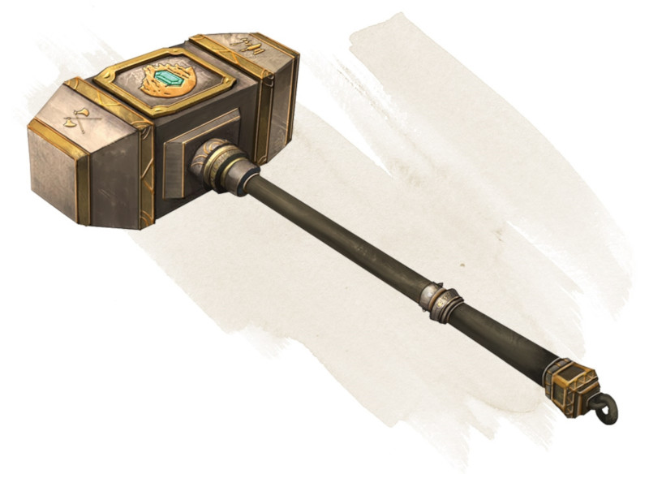

Marteau de lancer nain
[ Dwarven Thrower ]
Arme (marteau de guerre), très rare (nécessite un lien par un nain)
Vous gagnez un bonus de +3 à l'attaque et aux dégâts fait avec cette arme magique. Elle a la propriété lancer avec une portée normale de 6 mètres et une portée longue de 18 mètres.
Si vous touchez avec une attaque à distance en utilisant cette arme, elle inflige 1d8 dégâts supplémentaires ou, si la cible est un géant, 2d8. Immédiatement après l'attaque, l'arme vole pour revenir dans votre main.
Si vous touchez avec une attaque à distance en utilisant cette arme, elle inflige 1d8 dégâts supplémentaires ou, si la cible est un géant, 2d8. Immédiatement après l'attaque, l'arme vole pour revenir dans votre main.
Dungeon Master´s Guide (SRD)
